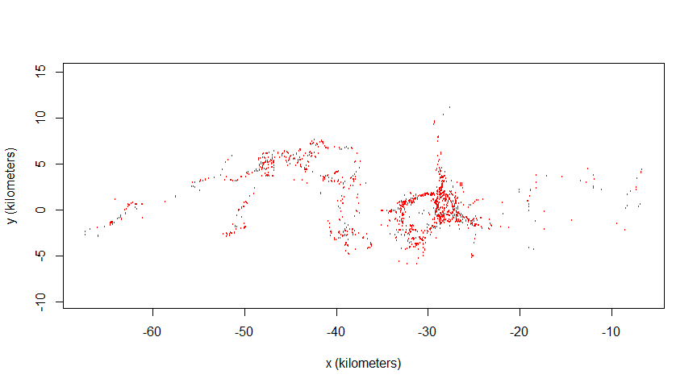
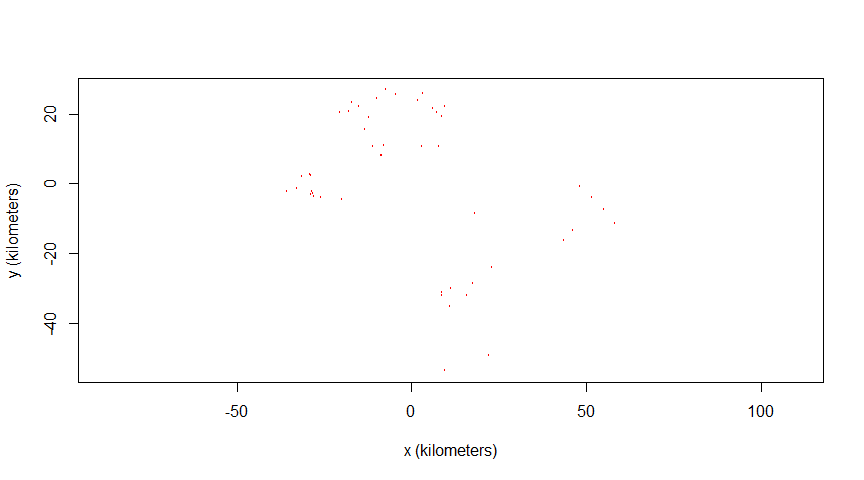
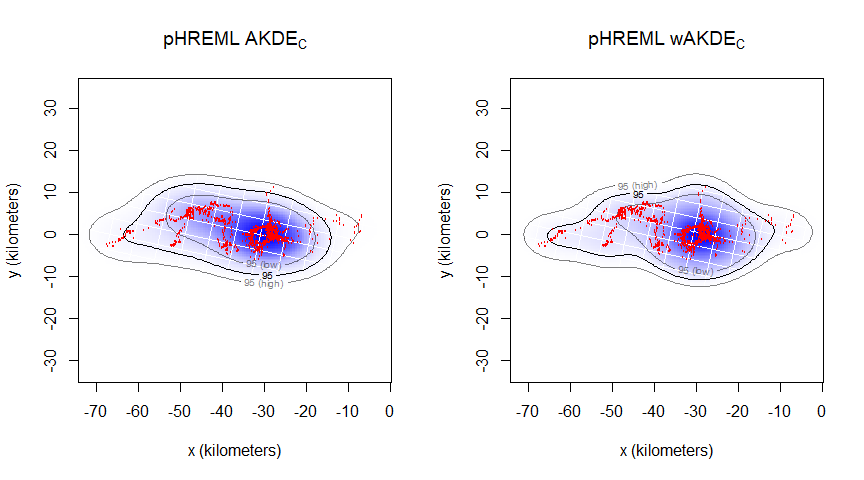
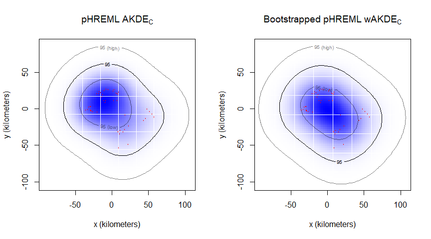

| Method | When to run? | What does it do? | R function |
|---|---|---|---|
| AKDE | Tracking data is autocorrelated | Estimates range distributions from autocorrelated data, by conditioning on an autocorrelation model. | akde(…, debias = FALSE) |
| AKDEc | If using GRF-based KDEs (such as AKDE) | Removes the tendency of Gaussian reference function (GRF) methods to overestimate the area of home ranges. | akde(…, debias = TRUE) |
| pHREML | Small (absolute and effective) sample sizes | Improves upon ML and REML autocorrelation estimation, mitigating small sample size biases. | ctmm.select(…, method = "pHREML") |
| wAKDEc | Irregular sampling schedules or missing data | Upweights observations that occur during under-sampled times, while downweighting those occurring during over-sampled times. | akde(…, weights = TRUE) |
| Parametric bootstrap | Extremely small effective sample size | Calculates and corrects for autocorrelation estimation biases, by simulating from an approximate sampling distribution. | ctmm.boot(...) |
Guide to autocorrelated home range estimation
A step-by-step R tutorial using the ‘ctmm’ package
This tutorial is a companion piece to our manuscript “Autocorrelation-informed home range estimation: a review and practical guide”. Manuscript was published in Methods in Ecology and Evolution. Preprint is also available on EcoEvoRxiv. For any definitions, check the main manuscript or the Glossary.
To cite this material:
Silva, I., Fleming, C. H., Noonan, M. J., Alston, J., Folta, C., Fagan, W. F., & Calabrese, J. M. (2022). Autocorrelation‐informed home range estimation: A review and practical guide. Methods in Ecology and Evolution, 13(3), 534-544.
https://ecoisilva.github.io/AKDE_minireview/code/AKDE_R-tutorial.html
Introduction
Home range estimation is a key output from animal tracking datasets, but the inherent properties of animal movement can lead traditional methods to under- or overestimated their size. Autocorrelated Kernel Density Estimation (AKDE) methods were designed to be statistically efficient while explicitly dealing with the complexities and biases of modern movement data, such as autocorrelation, small sample sizes, and missing or irregularly sampled data.
The AKDE family of home range estimators will be run using R software (https://www.r-project.org/) and the ctmm package (Calabrese et al., 2016). The techniques and mitigation measures available within this package include:
AKDEc and pHREML are default arguments within the akde() and ctmm.select() functions, respectively. Both measures will run automatically if arguments debias and method are left unspecified. For most situations, we recommend keeping both of these arguments as the default.
# Installing & loading package:
install.packages("ctmm")
library(ctmm)Data Preparation
We will use two datasets, both available within the ctmm package: African buffalos (Syncerus caffer), and Mongolian gazelles (Procapra gutturosa). Information on the data collection protocol is available in Cross et al. (2009) and Fleming et al. (2014). The ctmm package requires data to conform to Movebank naming conventions (https://www.movebank.org/node/2381). We recommend uploading your data to Movebank (http://www.movebank.org/) as this will facilitate data preparation, and ensure that your data are correctly formatted for ctmm. If needed, Movebank allows you to keep your data private.
We will focus on the simplest data structure:
animal IDorID— An individual identifier for each animal tracked;timestamport— The date and time corresponding to a sensor measurement;- Example: 2021-01-01 18:31:00.000
- Format: yyyy-MM-dd HH:mm:ss.SSS
- Example: 2021-01-01 18:31:00.000
longitudeorx— The geographic longitude of the location as estimated by the sensor;- Example: -121.1761111
- Units: decimal degrees, WGS84 reference system.
- Example: -121.1761111
latitudeory— The geographic latitude of the location as estimated by the sensor;- Example: -41.0982423
- Units: decimal degrees, WGS84 reference system.
- Example: -41.0982423
Location can also be described as UTM locations instead of latitude/longitude. In this case, you should provide UTM easting, UTM northing, and UTM zone. For all terms and conventions, please see the full vocabulary list here: http://vocab.nerc.ac.uk/collection/MVB/current/.
Step 1. – Formatting and loading an animal tracking dataset
You can import data into R through the read.table() or read.csv() functions; make sure to navigate to the appropriate folder or working directory. You can find two example files within the GitHub repository data folder. To read these .csv files into R:
install.packages("here")
library(here)
here() # your working directory
# First, list all files in a specific folder:
list.files("data") # verify that your file appears here# Then load the file:
animal0_longlat <- read.csv(here("data/example_data_longlat.csv"))
head(animal0_longlat) ID timestamp longitude latitude
1 animal0 2005-07-14 05:35 30.59648 65.24774
2 animal0 2005-07-14 07:35 30.53256 65.27085
3 animal0 2005-07-14 08:34 30.52398 65.26446
4 animal0 2005-07-14 09:35 30.52848 65.25948
5 animal0 2005-07-14 10:35 30.53382 65.26643
6 animal0 2005-07-14 11:34 30.49970 65.27868# or:
animal0_utm <- read.csv(here("data/example_data_utm.csv"))
head(animal0_utm) ID timestamp UTM.Easting UTM.Northing UTM.zone
1 animal0 14/07/2005 05:35 387730.0 7238204 36 +north
2 animal0 14/07/2005 07:35 384846.3 7240894 36 +north
3 animal0 14/07/2005 08:34 384418.1 7240197 36 +north
4 animal0 14/07/2005 09:35 384606.5 7239634 36 +north
5 animal0 14/07/2005 10:35 384885.8 7240399 36 +north
6 animal0 14/07/2005 11:34 383347.9 7241826 36 +north# Finally, convert to telemetry object:
animal0a <- as.telemetry(animal0_longlat)
animal0b <- as.telemetry(animal0_utm)
# if left unspecified, as.telemetry() will assume timezone = UTC, datum = WGS84Both these files represent the same individual, with either longitude/latitude, or UTM coordinates (easting, northing, and zone), and both outputs —animal0a and animal0b— will show the same coordinates after conversion. In general, the as.telemetry() function will immediately identify the columns if they are correctly named, convert the projection if needed, and then output the minimum sampling interval for each individual in the dataset. In this example, animal0 has a minimum sampling interval of 59 minutes.
1.1. Buffalo tracking data
For this tutorial, we will use data already prepared into a list of telemetry objects. We can load it directly from the ctmm R package with the data() function:
data("buffalo")
animal1_buffalo <- buffalo[[4]] # selecting individual number 4
head(animal1_buffalo) timestamp longitude latitude t x y
17517 2006-04-25 05:09:00 31.73749 -24.19705 1145941740 -51803.35 -2715.663
17518 2006-04-25 06:09:00 31.73653 -24.19929 1145945340 -51569.29 -2845.660
17519 2006-04-25 07:09:00 31.73946 -24.20100 1145948940 -51340.72 -2576.353
17520 2006-04-25 08:09:00 31.73987 -24.20092 1145952540 -51344.11 -2533.788
17521 2006-04-25 10:09:00 31.74086 -24.20365 1145959740 -51029.45 -2474.771
17522 2006-04-25 11:09:00 31.74098 -24.20370 1145963340 -51022.23 -2463.655# Plotting locations:
plot(animal1_buffalo)
This dataset showcases an irregular sampling schedule: the buffalo nicknamed “Pepper” had a sampling rate shift from one fix every hour to one fix every two hours. We will use this dataset to highlight data irregularity and the wAKDE mitigation measure.
1.2. Gazelle tracking data
data("gazelle")
animal2_gazelle <- gazelle[[11]] # selecting individual number 11
head(animal2_gazelle) x y t
2742 18152.70 -8539.799 0
2743 15931.16 -32069.788 1306800
2744 17678.84 -28632.329 1396800
2745 23135.50 -23820.789 1486800
2746 -20310.78 20348.792 2419200
2747 -17920.31 20598.668 2509200# Plotting locations:
plot(animal2_gazelle)
Mongolian gazelles have a home range crossing time of a few months, and with a maximum longevity around 10 years, it is impossible to get a considerable effective sample size no matter the study duration (Fleming et al., 2019). We will use this dataset to highlight how to check effective sample size and apply the parametric bootstrap mitigation.
Data Analysis
Step 2. – Checking for the range residency assumption
First, we want to check if our first tracking dataset (animal1_buffalo) can be used for home range estimation by checking for range residency. To achieve this, we calculate the semi-variance function (SVF), and visualize it through the variogram() function.
Variograms are an unbiased way to visualize autocorrelation structure, representing the average square displacement (y-axis) over a specific time lag (x-axis). To facilitate interpretation, we have the SVF of animal1_buffalo zoomed out (right) to showcase all time lags and (left) zoomed in to showcase time lags up to two months:
level <- 0.95 # we want to display 95% confidence intervals
xlim <- c(0,2 %#% "month") # to create a window of 2 months
SVF <- variogram(animal1_buffalo)
par(mfrow = c(1,2))
plot(SVF, fraction = 1, level = level)
abline(v = 1, col = "red", lty = 2) # adding a line at 1 month
plot(SVF, xlim = xlim, level = level)
abline(v = 1, col = "red", lty = 2)
We can see that the variogram flattens (i.e., reaches an asymptote) after approximately 1 month (red line). This also indicates at how coarse the timeseries needs to be to assume independence (no autocorrelation), and corresponds to when traditional methods —such as minimum convex polygons (MCPs) and Kernel Density Estimators (KDEs)— could be applied without violating their assumptions.
Step 3. – Selecting the best-fit movement model through model selection
It is necessary to choose a home range estimator that accounts for the autocorrelated structure of the data, now that we see that it is not independently and identically distributed (non-IID). We need to test what movement model may explain the autocorrelated structure of our tracking data. We can run different movement processes with maximum likelihood (ML) or other parameter estimators, such as perturbative Hybrid REML (pHREML). To facilitate further comparisons, we will run both ML and pHREML with the ctmm.select function.
# Calculate an automated model guesstimate:
GUESS1 <- ctmm.guess(animal1_buffalo, interactive = FALSE)
# Automated model selection, starting from GUESS:
FIT1_ML <- ctmm.select(animal1_buffalo, GUESS1, method = 'ML')
FIT1_pHREML <- ctmm.select(animal1_buffalo, GUESS1, method = 'pHREML')
## reminder: it will default to pHREML if no method is specified.
summary(FIT1_ML)
summary(FIT1_pHREML)Within these summaries, $name provides the selected best-fit model, $DOF provides information on the degrees of freedom (where $DOF["area"] corresponds to the effective sample size of the home-range area estimate), and $CI are the parameter outputs (area, position autocorrelation timescale, velocity autocorrelation timescale, and speed).
The typical pool of candidate models includes isotropic (when diffusion is the same in every direction; symmetrical) and anisotropic (when diffusion varies with direction; asymmetrical) variants. The automated model selection shows that OUF anisotropic (anisotropic Ornstein-Uhlenbeck foraging process) is our best-fit model. This movement process features a home range, correlated positions, and correlated velocities. To check the full model selection table, we can run the following command:
FIT1_pHREML_verbose <- ctmm.select(animal1_buffalo, GUESS1, verbose = TRUE)
summary(FIT1_pHREML_verbose)By adding the argument verbose = TRUE we have access to the model selection table. By default, model selection is based on Akaike’s Information Criterion adjusted for small sample sizes (AICc). The ctmm package also offers BIC, LOOCV, and HSCV. LOOCV seems to work slightly better for very small datasets, but we recommend AICc for the majority of datasets.
Step 4. – Feeding a movement model into the home range estimator
Now we can fit this movement process into the akde() function, and estimate the home range of animal1_buffalo. This function currently defaults to the area-corrected AKDE, or AKDEc (Fleming & Calabrese 2017):
# Run an area-corrected AKDE:
UD1_ML <- akde(animal1_buffalo, FIT1_ML)
UD1_pHREML <- akde(animal1_buffalo, FIT1_pHREML)
summary(UD1_pHREML)$CI # home range area estimationWe have calculated our home range for animal1_buffalo, resulting in an estimation of 757 km2 (with 95% confidence intervals: 430–1,175 km2).
Step 5. – Evaluating additional biases, applying mitigation measures
5.1. Buffalo tracking data
summary(UD1_pHREML)$DOF["area"] # effective sample size of animal1 area
15.65773 nrow(animal1_buffalo) # absolute sample size[1] 1725Our output here also reveals more information regarding our dataset: the effective sample size (N) and the absolute sample size (n). We can return this measure with the summary function: in our case, the N for animal1_buffalo is 15.7. Comparatively, our absolute sample size is easy to output, as it is the total number of observations within our dataset (n = 1,725).
As mentioned earlier, animal1_buffalo had a device malfunction that led GPS fixes to shift from one fix per hour, to one fix every two hours. As such, this individual is particularly suited for a weighted AKDEc (or wAKDEc), so we can re-run the function with weights set to TRUE:
UD1w_pHREML <- akde(animal1_buffalo, FIT1_pHREML, weights = TRUE)
summary(UD1w_pHREML)$CI # home range area estimation (weighted)Our new home range area estimation for animal1_buffalo is 761 km2 (with 95% confidence intervals: 432–1,182 km2). We can now plot our home range estimate for animal1_buffalo:
# Creating an extent that includes both UDs at the 95% CI level:
EXT <- extent(list(UD1_ML, UD1_pHREML, UD1w_pHREML), level = 0.95)
# Plotting pHREML (with and without weights) side-by-side:
par(mfrow = c(1,2))
plot(animal1_buffalo, UD = UD1_pHREML, ext = EXT)
title(expression("pHREML AKDE"["C"]))
plot(animal1_buffalo, UD = UD1w_pHREML, ext = EXT)
title(expression("pHREML wAKDE"["C"]))
For animal1_buffalo, the difference between model parameter estimators is not substantial; we only have a ~5.7% AKDE area underestimation by ML compared to pHREML. However, the data fits the spatial locations much better.
( 1 - summary(UD1_ML)$CI[1,2] / summary(UD1w_pHREML)$CI[1,2] ) * 100[1] 5.7375875.2. Gazelle tracking data
We can also check the difference with animal2_gazelle’s tracking data, where the small effective sample size issue is clearer:
GUESS2 <- ctmm.guess(animal2_gazelle, interactive = FALSE)
FIT2_ML <- ctmm.select(animal2_gazelle, GUESS2, method = 'ML')
FIT2_pHREML <- ctmm.select(animal2_gazelle, GUESS2, method = 'pHREML')
UD2_ML <- akde(animal2_gazelle, FIT2_ML)
UD2_pHREML <- akde(animal2_gazelle, FIT2_pHREML)With animal2_gazelle, we have a more substantial area underestimation by ML compared to pHREML (~15.2%). We can also see that our effective sample size is only 4.5, with an absolute sample size of 49 (N \ll n).
( 1 - summary(UD2_ML)$CI[1,2] / summary(UD2_pHREML)$CI[1,2] ) * 100[1] 15.16696summary(UD2_pHREML)$DOF["area"] # effective sample size area
4.528926 nrow(animal2_gazelle) # absolute sample size[1] 49At this point, we have selected a movement process, fed it into a home range area estimation with different model parameter estimators, and corrected for irregular sampling rates. With small effective sample sizes, it is important to see if parametric bootstrapping may be worth it to further reduce our estimation error. In order to do so, we can check the expected order of bias from pHREML:
# Expected order of pHREML bias:
1/summary(FIT2_pHREML)$DOF['area']^2 area
0.04875393 The bias is currently \mathcal{O}(5\%) (“in the order of” 5%). As such, we will run parametric bootstrapping for animal2_gazelle. The relative error target is 1% by default (argument error = 0.01), but can be adjusted if necessary.
start_time <- Sys.time() # start recording running time
BOOT <- ctmm.boot(animal2_gazelle, FIT2_pHREML, trace = 2)
## note: this function incurs substantial computational cost, may take hours.
( total_time <- Sys.time() - start_time ) # output running time
summary(BOOT)
1/summary(BOOT)$DOF['area']^3 # expected order of biasWe can see that the expected order of bias was reduced to 2.3%, which is comparable to the numerical error target of 1%. To reduce the numerical error further, we would need to change the default relative error target of ctmm.boot, but the computational cost would continue to increase, and the comparably large statistical bias (2%) would remain.
Now we will calculate the AKDEc based on the estimated parameters, and plot the home range of animal2_gazelle. Because of small effective sample size, we set optimal weights to TRUE for improved statistical efficiency:
UD2_bpHREML <- akde(animal2_gazelle, BOOT, weights = TRUE)
summary(UD2_bpHREML)$CIFinally, we have calculated our home range for animal2_gazelle, with an estimated area of 13,274 square kilometers (with 95% confidence intervals: 3,231–30,280 km2). Our uncertainty with animal2_gazelle is substantially higher than with animal1_buffalo, as expected due to the small effective sample size.
# Creating an extent that includes both UDs at the 95% CI level:
EXT <- extent(list(UD2_pHREML, UD2_bpHREML), level = 0.95)
# Plotting pHREML and bootstrapped-pHREML side-by-side:
par(mfrow = c(1,2))
plot(animal2_gazelle, UD = UD2_pHREML, ext = EXT)
title(expression("pHREML AKDE"["C"]))
plot(animal2_gazelle, UD = UD2_bpHREML, ext = EXT)
title(expression("Bootstrapped pHREML wAKDE"["C"]))
The results presented here were generated with R version 4.2.3, and ctmm version 1.1.1.
Glossary
– Home range: the area repeatedly used throughout an animal’s lifetime for all its normal behaviors and activities, excluding occasional exploratory moves.
– Range residency: the tendency of an animal to remain within their home range.
– Home range crossing time: the time required for an animal to cross the linear extent of its home range.
– Absolute sample size (n): the number of observations (fixes) in a dataset.
– Effective sample size (N): number of range crossings that occurred during the observation period. Can be roughly estimated by dividing the duration of the tracking dataset by the average home range crossing time parameter.
References
Calabrese, J. M., Fleming, C. H., & Gurarie, E. (2016). Ctmm: An r package for analyzing animal relocation data as a continuous‐time stochastic process. Methods in Ecology and Evolution, 7(9), 1124–1132.
Cross, P. C., Heisey, D. M., Bowers, J. A., Hay, C. T., Wolhuter, J., Buss, P., Hofmeyr, M., Michel, A. L., Bengis, R. G., & Bird, T. L. F. (2009). Disease, predation and demography: Assessing the impacts of bovine tuberculosis on African buffalo by monitoring at individual and population levels. Journal of Applied Ecology, 46(2), 467–475.
Fleming, C. H., Calabrese, J. M., Mueller, T., Olson, K. A., Leimgruber, P., & Fagan, W. F. (2014). From fine-scale foraging to home ranges: A semivariance approach to identifying movement modes across spatiotemporal scales. The American Naturalist, 183(5), E154–E167.
Fleming, C. H., Noonan, M. J., Medici, E. P., & Calabrese, J. M. (2019). Overcoming the challenge of small effective sample sizes in home‐range estimation. Methods in Ecology and Evolution, 10(10), 1679–1689.